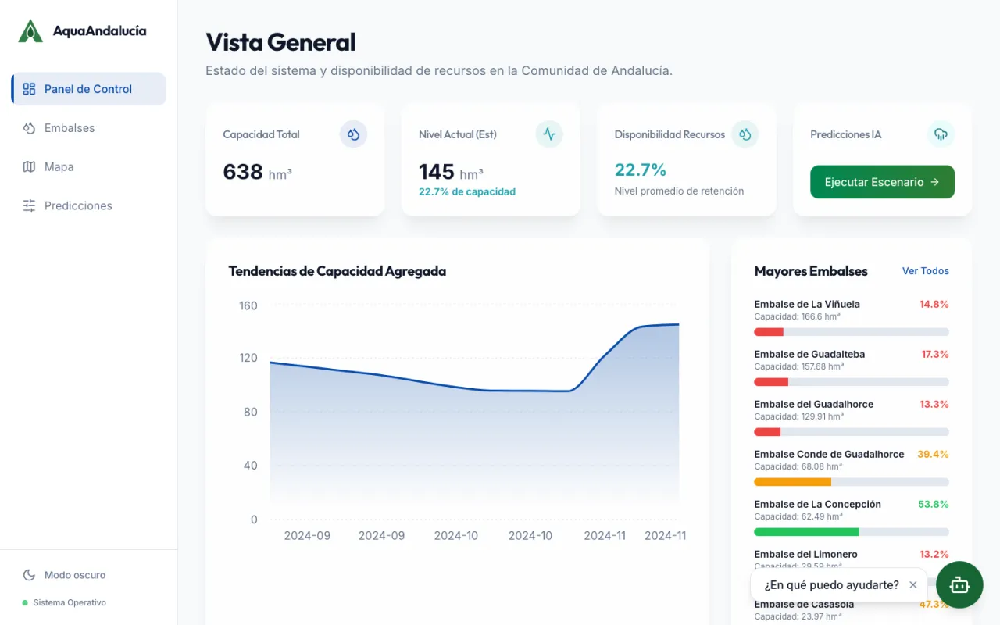

01 Bachelor's thesis · Deep learning · 2025–2026
Spatio-temporal reservoir forecasting
Spatio-temporal forecasting of 7 reservoirs with LSTMs and graph networks (GCN-LSTM), evaluated across horizons, with 90-day scenario simulation.

- −52%
- 30-day RMSE vs. persistence
- 0.70
- 60-day NSE (persistence: 0.07)
- 11
- models across 3 families
- Full ML pipeline: SAIH/AEMET series ingestion and cleaning, feature engineering, HPC training, API inference and visualisation.
- Autoregressive multi-horizon evaluation (7–60 days) with rolling origins against persistence, on a leak-free temporal split.
- Spatio-temporal modelling with a GCN-LSTM (T-GCN) over a Gaussian distance graph, and joint what-if simulation of all 7 reservoirs.
Read the full case studyHide details
My role Solo project: data engineering, modelling, experimental evaluation, inference backend and frontend.
The challenge
In 2024 Málaga's reservoirs hit the record low of the series: 24% average capacity after four years of decline. The weather–level relationship is cumulative, non-linear and lagged (|r| < 0.10 even at 60-day lags), and the test period (2020–2024) is a drought with no precedent in the training history: an out-of-distribution regime for classic seasonal models.
The solution
A forecasting platform on multivariate time series: an integrated daily dataset (SAIH Hidrosur + AEMET OpenData, 2000–2024), a benchmark of 11 models across three families (statistical, tabular ML and deep learning), training on the Picasso cluster, and a three-tier serving architecture — FastAPI for on-demand inference, an Express BFF and a React SPA — with a what-if simulator and a natural-language assistant.
Architecture
- Data
- SAIH Hidrosur + AEMET OpenData · interpolation, capping and invariant validation · ~9,100 observations per reservoir
- Models
- ARIMA/SARIMA (AIC), Prophet, Random Forest, XGBoost, weighted ensemble · uni/multivariate LSTM, transfer learning, attention ST-LSTM · GCN-LSTM (T-GCN)
- Training
- PyTorch on Picasso (HPC) · Adam, MSE, early stopping (patience 20), 90-day window, fixed seed
- Serving
- FastAPI + Pydantic (/predict, /scenarios, /ask) · Express 5 BFF with Drizzle (SQLite) and Zod · LLM with a fallback parser
- Product
- React 18 + TypeScript, Vite, Tailwind, shadcn/ui, Recharts and Leaflet
Key technical decisions
- Persistence as a mandatory baseline: one step ahead every model saturates at R² ≈ 0.999, so the main evaluation is autoregressive at 7, 14, 30 and 60 days with rolling origins.
- Strict temporal split (70/15/15) without shuffling and scalers fitted on the training set only, to prevent data leakage.
- Hydrological feature engineering: 1–30 day lags, rolling means, 30-day cumulative precipitation and cyclical (sine/cosine) day-of-year encoding.
- GCN-LSTM reformulated to predict increments (Δ) instead of absolute level: removes persistence bias and makes what-if simulations physically coherent.
- A 7-node graph with a Gaussian kernel over haversine distances and Kipf–Welling normalisation, predicting all reservoirs jointly.
- Analog scenarios using real weather trajectories (2002, 2010, 2017, 2023) plus a synthetic stress test (2023 with −30% precipitation) to stay within the training distribution.
Results
- Multivariate LSTM: RMSE of 5.74 vs. 11.99 for persistence at 30 days (−52%) and NSE of 0.70 at 60 days vs. 0.07.
- Complementary families: the weather-aware LSTM leads from 7 to 60 days and monthly SARIMA from 1 to 6 months (R² of 0.45 at 3 months vs. −0.32 for persistence).
- 90-day what-if inference for all 7 reservoirs with alert thresholds (20% and 10%) and an assistant that maps natural language to simulation parameters.
Next step
A global multi-reservoir LSTM, direct multi-horizon forecasting with future covariates, conformal prediction intervals, a graph based on real hydrological connectivity and automated daily SAIH ingestion.